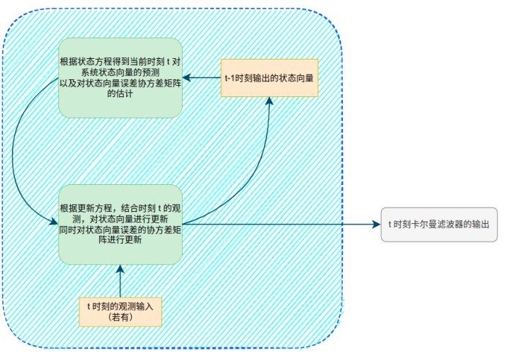

形象化理解卡尔曼滤波—最小例子及代码
一、概述
这篇文章会使用一个形象化的最小例子说明卡尔曼滤波器各个公式的推导。
如果你已经从纯数学公式推导过卡尔曼滤波器，那么这篇文章可以让你形象化地理解卡尔曼滤波器的精髓，即为什么利用[预测->更新]的循环可以得到对系统状态的估计？
如果你还在寻求对卡尔曼滤波器入门的讲解，这篇文章更可以让你建立对卡尔曼滤波器即直观又严谨的概念。如果要学习卡尔曼滤波器的完整公式化推导过程，可以查看另一篇文章：卡尔曼滤波器——基础知识
PS：这篇文章有大部分来自外国的一篇课程讲义：Understanding the Basis of the Kalman Filter Via a Simple and Intuitive Derivation。当然，语言是自己重新组织，同时，符号上的规定保持与本专栏卡尔曼滤波系列的其他文章一致。
二、最小例子
我们有一辆小车，小车上面装了加速度传感器，为了简便描述，该加速度传感器只会输出一个方向（设为x）上的加速度值。该加速度计每隔\(\Delta t\) 时间输出小车在时刻\(t\)的瞬时加速度\(a_t\)。同时，有一个光学测量仪器可以在每一时刻测量光从原点传播到小车位置的时间\(z_t\)。我们希望能够估计小车在每一时刻的速度\(v_t\)和距离\(d_t\)。
如何求解？ 如果加速度计的测量是完美的，那么我们直接对加速度做积分就能得到速度，对速度再做一次积分就得到距离。但是在实际中，无论什么样的传感器的输出都是带有噪声的。因此，我们不能用该传感器的原始输出做积分。
三、卡尔曼滤波的两个步骤
卡尔曼滤波包含两个步骤 1. 预测（prediction）—— Dynamic model 2. 更新（correction/measurment update）—— Observation model
所谓预测，就是用一个数学模型，根据当前的传感器输出，直接根据模型推导此时系统的状态。可以理解为一个方程的计算就行。 所谓的更新，就是在某些时刻或者每一时刻，获取一些系统的观测信息（可以同样是传感器的值），甚至是预测阶段中的同样的传感器的值，将其当作带噪声的真值，我们将这个值叫做测量值(measurment)。比较此刻预测的系统状态和测量的系统状态，对预测的系统状态进行修正。因此也叫测量更新（measurment update） 
四、卡尔曼滤波的状态方程
状态方程
卡尔曼滤波算法假定系统在某一时刻的状态可以由上一时刻根据一个线性方程变化而来 \[ \textbf{x}_t = \textbf{A}_t\textbf{x}_{t-1}+ \textbf{B}_t\textbf{u}_t+\textbf{w}_t \tag{1}\] 其中 - \(\textbf{x}_t\)就是每一时刻系统的状态向量，N行1列 - \(\textbf{u}_t\)是该时刻系统的输入，M行1列 - \(\textbf{w}_t\)是系统随机噪声，N行1列；且该随机噪声是高斯噪声，均值为0，协方差矩阵为\(\textbf{Q}_t\)，N行N列 - \(\textbf{A}_t\)叫做状态转换矩阵，N行N列 - \(\textbf{B}_t\)称为控制矩阵，N行M列
PS:大写字母表示矩阵；小写加粗字母表示向量；小写字母表示变量
由于噪声\(\textbf{w}_t\)是均值为0的高斯噪声，那么上述状态方程的期望（最大概率对应的值）也就是 \[ \hat{\textbf{x}}^-_t = \textbf{A}_t\hat{\textbf{x}}^+_{t-1} + \textbf{B}_t\textbf{u}_t\tag{2}\] 其中： - 上标\(\hat{.}\)表示该值是一个估计的量，角标+、-表示更新后，更新前的量。
公式（2）的意思就是说，当前时刻对状态向量的预测可以从上一时刻输出的系统状态乘以状态转换矩阵加上此时的控制输入乘以控制矩阵得出。
（当前时刻预测的状态向量经过第二步骤的更新之后成为当前时刻的最终输出）
代入例子中
由于我们要估计小车每一时刻的速度和距离，那么很自然地，系统状态向量\(\textbf{x}_t=[\textbf{d}_t,\textbf{v}_t]^T\)，由于我们只关注一个纬度上的估计，那么速度和距离就弱化为一个变量，则 \[ \textbf{x}_t = \begin{bmatrix} d_t\\ v_t \end{bmatrix}\] 同时，我们让每一时刻的控制输入是加速度计输出的加速度值 \[ \textbf{u}_t=[a_t]\] 那么，由高中物理 \[ v_t=v_{t-1}+a_t\Delta t\] \[ d_t = d_{t-1}+v_{t-1}\Delta t+\frac{1}{2}a_t\Delta t^2\] 我们将上面两个式子写成矩阵相乘的形式 \[ \textbf{x}_t = \begin{bmatrix} d_t\\ v_t \end{bmatrix}= \begin{bmatrix} 1 \ \ \Delta t\\ 0 \ \ \ \ \ 1\\ \end{bmatrix} \begin{bmatrix} d_{t-1}\\ v_{t-1}\\ \end{bmatrix}+ \begin{bmatrix} \frac{\Delta t^2}{2}\\ \Delta t\\ \end{bmatrix}a_t\\\] 于是，我们就得出了A矩阵和B矩阵的表达形式 \[ \textbf{A}_t= \begin{bmatrix} 1 \ \ \Delta t\\ 0 \ \ \ \ \ 1\\ \end{bmatrix}, \textbf{B}_t= \begin{bmatrix} \frac{\Delta t^2}{2}\\ \Delta t\\ \end{bmatrix} \\\]
五、状态向量的协方差矩阵
协方差矩阵的推导
上文中，公式（1）是系统状态的线型模型，公式（2）是对系统状态的预测方程。其实公式（2）之所以成立，是因为高斯噪声的0均值特性。所以公式（2）可以看成是公式（1）的期望。 那么我们使用公式（2）对系统状态进行预测，得出的误差是多少呢？这也就是系统状态的协方差。随机向量的协方差矩阵等于向量减去均值的平方的期望，于是，由公式（1）减去公式（2）并求期望，有： \[ \begin{split}P^-_t&=\mathbb{E}[\big((A_tx_{t-1}+w_t)-A_tx_{t-1}^+\big)\big((A_tx_{t-1}+w_t)-A_tx_{t-1}^+\big)^T]\\ &=\mathbb{E}[\big(A_t(x_{t-1}-x_{t-1}^+)+w_t\big)\big(A_t(x_{t-1}-x_{t-1}^+)+w_t\big)^T]\\ &=\mathbb{E}[A_t(x_{t-1}-x_{t-1}^+)(x_{t-1}-x_{t-1}^+)^TA_t^T]+\mathbb{E}[w_tw_t^T]\\ &=A_tP_{t-1}^+A_t^T+Q_t \end{split} \\\] 其中考虑到了状态向量与噪声是独立的（第二个等号到第三个等号的简化）。 于是我们得到了预测的状态向量的协方差表达 \[ P^-_t=A_tP^+_{t-1}A^T_t+Q_t\tag{3}\\\] 其中，\(P_{t-1}^+\)是\(t-1\)时刻更新后的状态向量的协方差矩阵，其具体形式在后文给出 从公式（3）的形式也可以看出，由于有一个噪声的协方差矩阵，所以误差随着时间的推移在不断地累积。 ## 代入例子中 为了计算\(t=1\)时刻预测的状态向量的协方差矩阵，我们需要给一个\(t=0\)时刻的协方差矩阵\(P_0^+\),以及初始化一个\(Q_0\)。卡尔曼滤波对初始值还是不那么敏感的。在实际使用中，如果可以得到在一段初始时间内状态向量的简单计算结果，那么也许可以从这一段时间内计算均值然后计算出方差。比如在这个例子中，起始阶段，小车静止，速度和距离都是0，但是如果直接用加速度的输出做一次积分得到速度，做二次积分得到距离，那么得到的速度和位置就不是0，那么我们就可以根据这一段静止状态下简单估计状态向量的方差。
噪声同理，我们可以取前面一小段静止的数据计算加速度输出的方差。
如果对于无法估计的系统，那么噪声的协方差可以设为传感器的观测方差（一般在传感器的参数给出）。 或者其实将两个方差都设置为一个比较小的值即可。比如 \[ \textbf{P}_0= \begin{bmatrix}10^{-5} \ \ 0\\0 \ \ 10^{-5}\\ \end{bmatrix}, \textbf{Q}_0= \begin{bmatrix}10^{-10} \ \ 0\\ 0 \ \ \ 10^{-10}\\ \end{bmatrix}\]
六、如何理解预测方程和协方差矩阵

我们用了公式（1） \[ \textbf{x}_t = \textbf{A}_t\textbf{x}_{t-1}+ \textbf{B}_t\textbf{u}_t+\textbf{w}_t\] 对系统的状态向量进行建模，由于传感器的输出是带噪声的，那么必将反映到我们对状态向量的估计，也就是反映到了公式（1）中的噪声项。同时我们假设这是一个随机噪声（高斯噪声），那么系统状态实际上就是一个随机向量。也就是说，系统状态等于什么值实际上是一个概率问题。 由于高斯噪声是0均值的，也就是值为0对应的概率最大，因此我们使用公式（2） \[ \hat{\textbf{x}}^-_t = \textbf{A}_t\hat{\textbf{x}}^+_{t-1} + \textbf{B}_t\textbf{u}_t\] 作为每一时刻对状态向量的预测，其实也就是取了公式（1）的均值。
那么对应到上面的那个图中，小车在时刻t的位置是一个满足图示的概率分布，其中均值为\(\hat{\textbf{x}}_t^-\)（公式2），协方差矩阵为\(P^-_t\)（公式3）
七、测量更新
测量
其实我们也可以用公式（2）不断迭代得到对状态向量的预测，但这明显是不够的，因为误差在持续不断地累积。为了将公式（2）预测的值修正，就需要得到更多的信息，也就是对系统的测量。
我们假设对系统的测量与系统的状态之间有如下关系： \[ \textbf{z}_t=H_t\textbf{x}_t+\textbf{v}_t\tag{4}\\\] 其中： - \(\textbf{z}_t\)是测量向量，L行1列 - \(H_t\)就叫做测量转换矩阵吧（不知道可不可以这样叫），L行N列。作用就是将系统状态映射到测量域 - \(\textbf{v}_t\)叫做测量噪声，L行1列。其协方差矩阵为\(\textbf{R}_t\) - 我们同时假设\(\bar{\textbf{z}}_t\)是测量得到的值，这个值也是\(\textbf{z}_t\)的均值
代入例子中
前文例子中系统状态向量是距离和速度 \[ \textbf{x}_t = \begin{bmatrix} d_t\\ v_t \end{bmatrix}\] 我们可以得到的测量值是光从原点移动到小车的时间，那么\(H\)就是光速(c)的倒数 \[ \begin{split} H_t= \begin{bmatrix} \frac{1}{c}\ \ 0 \end{bmatrix} \end{split}\]
测量更新
我们已知\(\textbf{z}_t\)满足下面分布 \[ p(z)\sim N(\bar{z}, R)\] 且根据公式（4），可以得到\(\textbf{x}_t\)的另一个分布(根据多元高斯分布的性质) \[ \textbf{x}^2_t \sim N(H_t^{-T}\bar{\textbf{z}}_t, H_t^{-T}R_tH_t^{-1})\]
在预测阶段，我们得到的\(\textbf{x}_t\)的一个分布是 \[\textbf{x}^1_t \sim N(\hat{\textbf{x}}_t^-, P_t^-)\]
两者的联合概率分布是 \[ \begin{split} \mu_{fused}&=\frac{\mu_1\sigma_2^2+\mu_2\sigma_1^2}{\sigma_1^2+\sigma_2^2}\\ &=\mu_1+\frac{(\mu_2-\mu_1)\sigma_1^2}{\sigma_1^2+\sigma_2^2}\\ &=\hat{x}_t^-+\frac{(H_t^{-1}\bar{z}_t-\hat{x}_t^-)P_t^-}{P_t^-+H_t^{-1}R_t(H_t^{-1})^T}\\ &=\hat{x}_t^-+\frac{P_t^-H_t^T}{H_tP_t^-H_t^T+R_t}(\bar{z}_t-H_t\hat{x}_t^-)\\ &=\hat{x}_t^-+K_t(\bar{z}_t-H_t\hat{x}_t^-) \end{split}\\\] \[ \begin{split} \sigma_{fused}^2 &=\frac{\sigma_1^2\sigma_2^2}{\sigma_1^2+\sigma_2^2}\\ &=\sigma_1^2-\frac{\sigma_1^4}{\sigma_1^2+\sigma_2^2}\\ &=P_t^--\frac{P_t^-H_t^TH_tP_t^-}{H_tP_t^-H_t^T+R_t}\\ &=P_t^--K_tH_tP_t^- \end{split}\\\] 其中 \[ K_t=\frac{P^-_tH_t^T}{H_tP^-_tH_t^T+R_t}\]
于是，我们得到了结合测量量之后新的系统状态输出 \[\hat{x}_t^+=\hat{x}_t^-+K_t(\bar{z}_t-H_t\hat{x}_t^-)\]
总结
代码
完整代码可以从github获取：https://github.com/zeal-github/KalmanFilterTutorial/blob/master/BaseKalmanFilter/CarExample.py
数据生成
1 | import numpy as np |
数据可视化结果
各个转换矩阵及初始化
1 | A = np.array([ |
卡尔曼滤波过程
1 | est_vel = [0] |
滤波结果可视化及误差
## 结果分析 要注意一点，代码里使用均匀分布模拟噪声，以模拟不知道真实噪声分布情况
从上图可以看到，速度的预测结果误差明显减小，距离的估计误差相比直接积分也小了很多。而且这里我们添加的噪声其实不是高斯噪声，也证明了卡尔曼滤波能够处理真实的噪声分布。
其实我们也可以将加速度当作系统的一个状态放进状态向量中，同时也将其当作一个测量量。这样可以起到类似平滑加速度信号的效果。对应的状态方程和矩阵形式只需要做出一点修改。具体代码放入仓库中：https://github.com/zeal-github/KalmanFilterTutorial/blob/master/BaseKalmanFilter/CarExample_acc_as_state.py # Ref [1] Understanding the Basis of the Kalman Filter Via a Simple and Intuitive Derivation